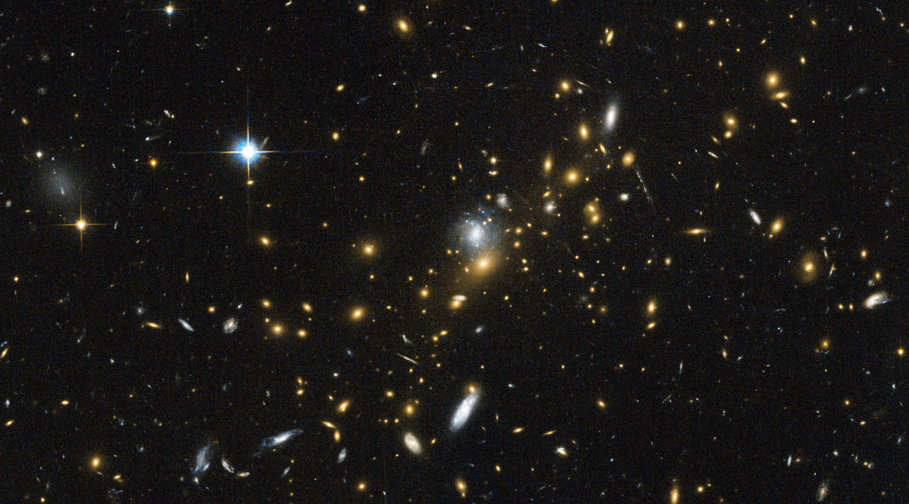

L'Univer

On regroupe sous le terme d'« univers » l'ensemble de tout ce qui existe. Cet ensemble
est régi par un certain nombre de lois.
L'histoire de l’univers commence il y a quelque 13,7 milliards d'années dans une soupe
extrêmement dense et chaude. Les lois de la physique telles que nous les connaissons
n'ont pas cours au sein de cette soupe. Survient alors une brusque expansion
qui se poursuit encore aujourd'hui, à moindre vitesse - qui donnera naissance aux
étoiles, aux galaxies, aux planètes et à tous les autres corps célestes.
Avec le modèle du Big Bang notamment, la cosmologie, cette science qui étudie
l'univers dans l'espace et le temps, a pu répondre à quelques questions concernant
son origine et son évolution. Cependant, des questions essentielles sur l'univers sont
encore posées : quelle est la taille de l'univers ? Quelle est la nature de la matière
noire (ou matière sombre) ?